id="js_content" style="">

为什么有些人那么坏
却过得那么好？
为什么有些人行为端正
却要遭受悲惨？
为什么身边的人那么自私
总是将自己的想法强加于别人？
上帝啊，你在哪里
你为什么掩面不看我们所遭遇的不公和悲惨呢！
.......
在这个世界上，每个人都会遇到上面的疑惑。
苦难和饶恕是人类恒久要面对和思考的问题，这也是金棕榈电影《生命之树》所要表现的主题。
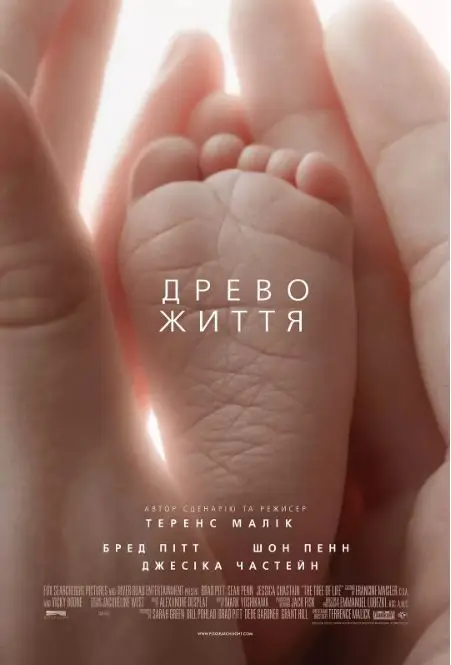
本片导演泰伦斯.马力克可以说是美国的塔尔可夫斯基。
他的电影有着诗意的旁白，总是关注永恒、充满哲理，叙事非常舒缓，摄影极具魅力，非常擅长使用自然光线。
泰伦斯.马力克非常低产，从惊艳世界的处女作《穷山恶水》到奥斯卡获奖电影《天堂之日》中间隔了五年。
之后泰伦斯.马力克消失了二十年，直到1998年，马力克凭《细细的红线》获得柏林影展金熊奖，并入围7项奥斯卡奖。
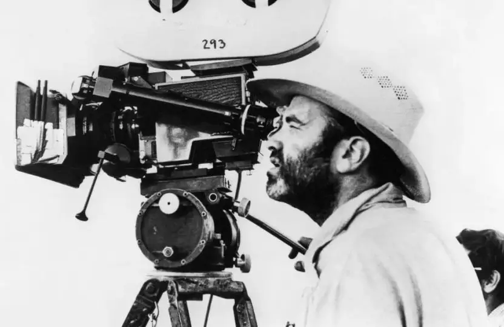
《生命之树》是他的第五步作品，本片摘得了电影艺术界的最高荣誉金棕榈大奖。
电影刚开始，一个女人就向上帝发问，苦难为什么会降临在自己身上。
就像摩西所看到的，导演泰伦斯.马力克用一团神奇的火焰来代表上帝。

原来，发问的女人是一个漂亮贤惠的母亲。
她敬畏上帝，对人充满爱心，但她不到二十岁的小儿子却死在了战场上。
她和自己的丈夫悲痛欲绝，难以面对这样的悲惨。
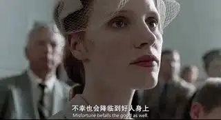
接着电影没有展开故事去刻画这场悲剧，而是将画面跨越到了多年以后。
由西恩.潘饰演的大儿子杰克已经人到中年，他是一个工程师，生活在高楼林立的都市里，但看上去并不快乐。
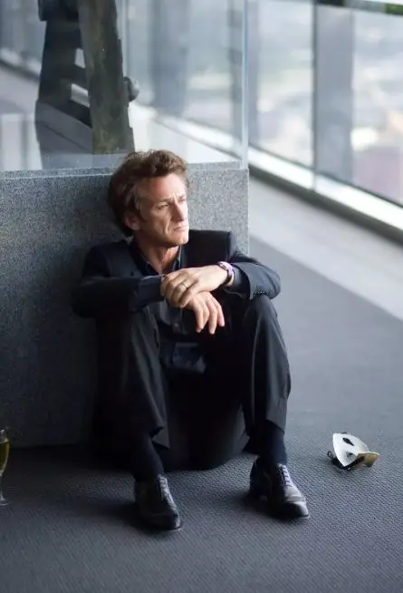
有一天，他在都市里看到了一颗绿葱葱的树。
这不禁让他回想起自己的父母、兄弟以及童年。
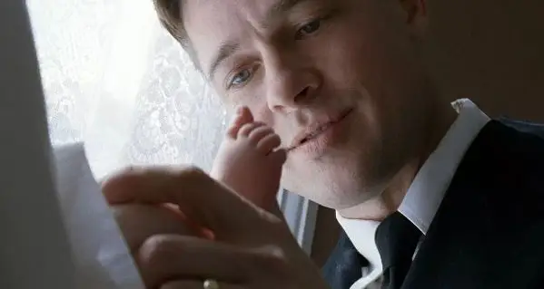
| 布拉德.皮特饰演父亲
这些回忆都是一些很生活化的碎片。
刚出生的杰克受婴儿洗。
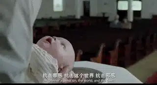
自己在母亲怀里慢慢长大。
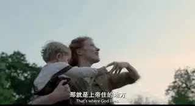
和自己的两个弟弟一起打闹嬉戏。
一家人在饭桌前做献饭祷告。
一起参加教会聚会，聆听牧师讲《约伯记》。
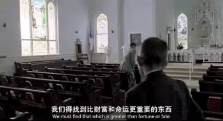
这些回忆非常跳跃，几乎没有任何的故事性。
不仅没有故事性，杰克的想象也慢慢地渗透在这些回忆里。
电影中出现了很多超现实的画面。
小杰克的房间忽然变成了汪洋大海，他自由地翱翔其中。
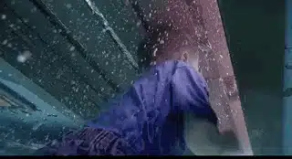
母亲摇曳在空中，沉浸在大自然的美好中。
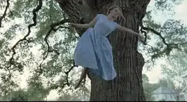
甚至，导演将浩瀚的宇宙以及神奇的细胞世界插入到其中。
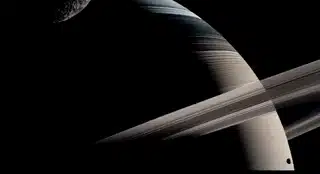
接着回忆中呈现了杰克童年时的阴影。
爸爸有个音乐梦，想要成为一个钢琴家，但是他却不得不为生计奔波。
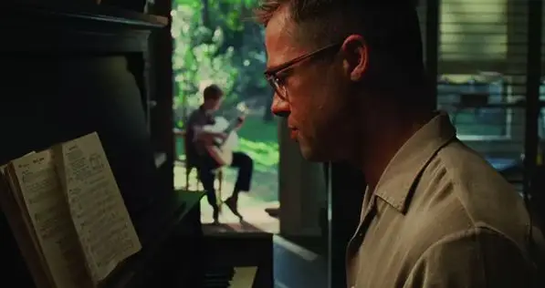
当他看到身边的暴发户时，心里总是很愤懑不平。
因此，爸爸告诉他和两个弟弟，做人不能太善良，要努力坚持做自己喜欢的事情，将来一定要有所作为。
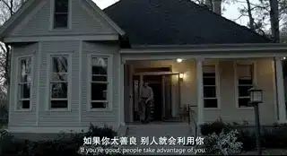
在生活里，爸爸对他们很严苛，一言不合就会挨揍。
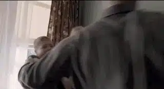
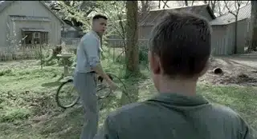
因为这样，三个兄弟在家里说话做事总是要小心翼翼。
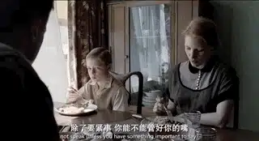
妈妈也为此和爸爸经常吵架。
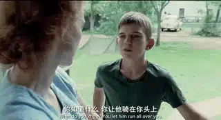
杰克非常痛恨爸爸，甚至向上帝祷告让爸爸去死。
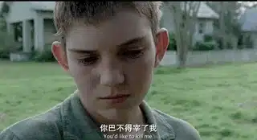
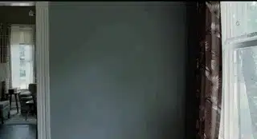
有一天，爸爸跟船出海工作，三个男孩一下子得到了解放。
他们可以和妈妈一起放肆的玩耍和嬉笑。
同时，小孩子身上的罪恶也开始放肆。
他们用石头打碎别人家的玻璃，将青蛙绑在炮竹上发射到天空中。
杰克甚至还欺负自己的小弟弟......
他发现，虽然自己讨厌父亲，但自己越来越像父亲一样容易暴怒，总是会伤害别人，甚至是自己所爱的兄弟。
不久，父亲回到家中。
这一次杰克看到的不是暴怒的父亲，而是充满软弱的父亲。
他失业了。
沮丧的父亲第一次向杰克道歉：
我希望有人爱我....一个大男人，现在却一无所有，看我们周围的荣耀，树木和小鸟，我活在羞愧中，我蔑视一切，忽视了荣耀，我是一个愚蠢的人......
通过回忆，杰克终于原谅了父亲，并对信仰、生命有了更深的认识。
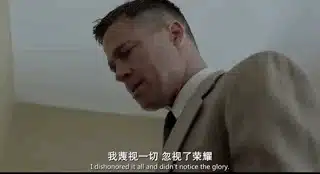
这是一部令人很费解的电影，因为几乎没什么故事性。
多年前我就看过，当时睡着了好几次。
我实在看不出将家庭生活和宇宙并列在一起有什么特别的含义。
我更不明白电影在讲什么。
但是它竟获得了电影界的最高荣誉，我当时只能笑而不语，表示欣赏不来。
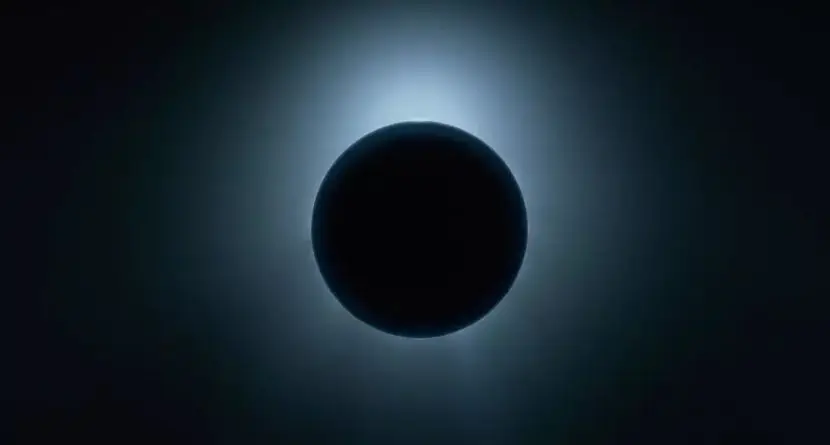
上周一个早晨醒来，我觉得特别精神，心里莫名的喜乐。
出于一种说不上来的感动，我特别想读《创世纪》第一章。
起初神创造天地。
地是空虚混沌，渊面黑暗；神的灵运行在水面上。
神说：“要有光”，就有了光。
神看光是好的，就把光暗分开了。
神称光为昼，称暗为夜。有晚上，有早晨，这是头一日。
......
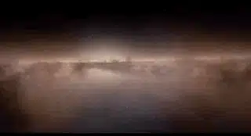
从小就被无神论洗脑，这段圣经我一直视为神话，读起来像是天方夜谭，觉得非常无聊。
有时候看到其他基督徒读到这段时的那种兴奋，我心里有种不由自主的鄙视。
但是那一天，我被这一章所描绘的上帝创世之举震撼了，这段无聊的描述忽然让我心里非常感动和得安慰。
同时，我不由地想到了这部《生命之树》。
信仰上的更新也成为了我理解这部电影的钥匙。
晚上，我再一次观看电影的时候，我不仅没有打瞌睡，而且被深深的震撼。
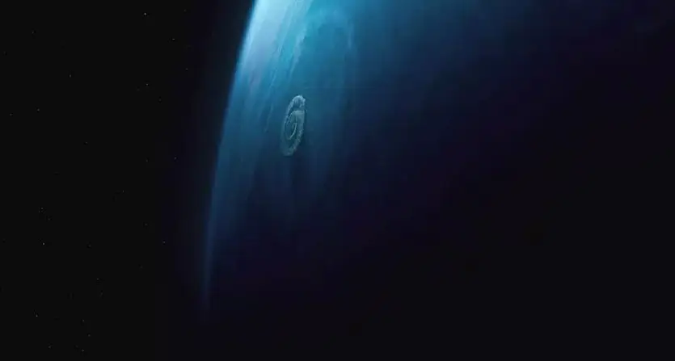
我难以想象，有人竟然能够用电影将《圣经》里上帝的爱以及《约伯记》里关于苦难的追问完美地表现出来。
我之前看不懂，是因为不明白信仰，如今我能够看懂，是因为我真的相信这个世界是上帝创造的。
电影刚开始母亲的发问，是一个约伯式的问题。
在《圣经》里，约伯是位正直良善的富人，在巨大灾难中失去了人生最珍贵的事物，包括子女、健康和财产。
他在困苦绝望中向上帝求问，想要知道为什么苦难会临到自己身上。
但是，上帝并没有回答他的问题。
而是向他描述了自己的创造：
我立大地根基的时候，你在哪里呢？你若有聪明，只管说吧！
你若晓得就说，是谁定地的尺度？是谁把准绳拉在其上？
地的根基安置在何处？地的角石是谁安放的？
那时，晨星一同歌唱，神的众子也都欢呼。
海水冲出，如出胎胞。那时谁将它关闭呢？
是我用云彩当海的衣服，用幽暗当包裹它的布。
......
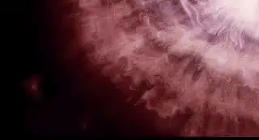
约伯是人类的缩影，每个人都想要理解苦难。
对于苦难，“恶有恶报，善有善报”是人类可以理解也愿意接受的理由。
但是如果好人遭受苦难，事情就麻烦了，因为我们给不出合适的答案。
可是，苦难一定需要一个答案么？
亦或者，处于患难中的我们最需要的是一个理由么？
人类是有限的，我们永远难以理解和想象苦难在永恒里的意义。
所以，上帝并没有向约伯解释。
而是向他描述自己的创造，当悲痛的约伯被上帝奇妙的创造所震撼的时候。
他不仅看到了上帝的荣耀，也看到了自己的渺小。
约伯慢慢谦卑下来不在发问，疑惑的心转变为对上帝的信心和敬拜。
所以，约伯说：
我从前风闻有你，现在亲眼看见你。
因此我厌恶自己（“自己”或作“我的言语”），在尘土和炉灰中懊悔。
所以，当母亲向上帝发问的时候。
导演也一样没有给出回应，而是展示上帝创造的奇妙。
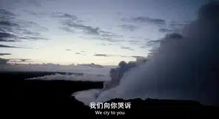
上帝不仅创造了宇宙，还创造了人类。
所以导演将人类的生活与浩瀚的宇宙并立。
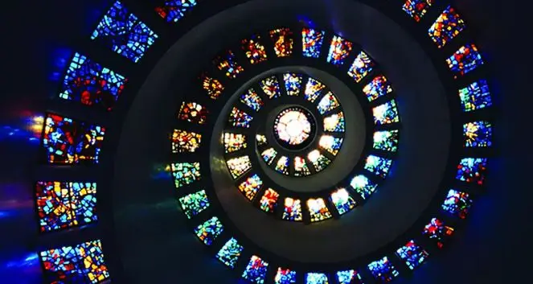
回忆过去，杰克不仅被宇宙震撼，在自己的家庭里也发现了隐秘于平常中的永恒。
比如当杰克出生时，代表上帝的火焰就在他的身边。
上帝更是透过童年的经历，让杰克更深地认识了自己和父亲。
原来他和父亲一样都是罪人，总是会很自我地伤害身边的人。
当他认识到人的败坏，并看到上帝的荣耀时。
杰克跪了下来。
我观看你指头所造的天，并你所陈设的月亮星宿，便说，人算什么，你竟顾念他？世人算什么，你竟眷顾他？
他在上帝里面真正的原谅了自己的父亲。
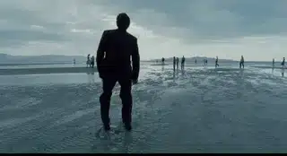
在最后的这个超现实的场景里。
所有人像是走在通往天堂的路上。
在这条路上，突破了时空的限制，人到中年的杰克竟然遇到了年轻的父母。
他们互相拥抱。
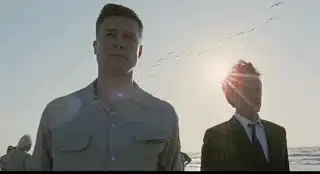
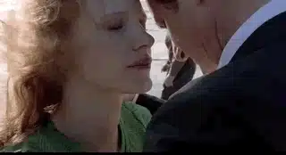
死去的小儿子也出现在这里，父亲幸福地将儿子抱在怀里。
而向上帝发问的母亲，也在一步步走向上帝的荣耀中。
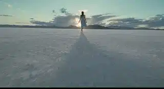
在荣光里，母亲像约伯一样停止了发问，她张开双手敬拜上帝，将儿子交付给了上帝。
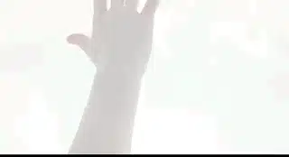
两个多小时，泰伦斯.马力克创造了奇迹。
他通过一个家庭将人类的苦难、罪恶、饶恕与上帝的创世联系在一起，并从信仰的高度让我们更深地理解了我们自己以及我们所遭遇的苦难、不公。
这就是信仰的深度！
而无神论永远也看不懂这部电影在讲什么。
在无神论的眼里，身边的一切都是实用的，大自然和宇宙只是他们掠夺和征服的对象。
即使他们有时会不由地惊叹大海的浩瀚，却不知道向谁感谢。
因为他们说所有的一切都是偶然的，都是从一个偶然产生的细胞进化而来的。
岂不知，一个细胞复杂程度堪比宇宙，所以导演将宇宙和细胞剪辑在一起来彰显上帝创造的奇妙。

因此，无神论说“一切都是偶然产生”是一件很荒谬的事情。
这就相当于，你拿着一台苹果笔记本，却告诉别人，这个东西是偶然自己产生的。
岂不知，不是上帝不存在，是我们被罪恶和无知遮蔽了双眼，《圣经》里早已清晰的说明了这一点：
神的事情，人所能知道的，原显明在人心里，因为神已经给他们显明。
自从造天地以来，神的永能和神性是明明可知的，虽是眼不能见，但藉着所造之物就可以晓得，叫人无可推诿。
因为，他们虽然知道神，却不当作神荣耀他，也不感谢他。他们的思念变为虚妄，无知的心就昏暗了。
自称为聪明，反成了愚拙。
如果我们认识了上帝，我们会真正地爱每一个人、 每一片树叶、每一道光束，因为这都是上帝赐给我们的礼物。
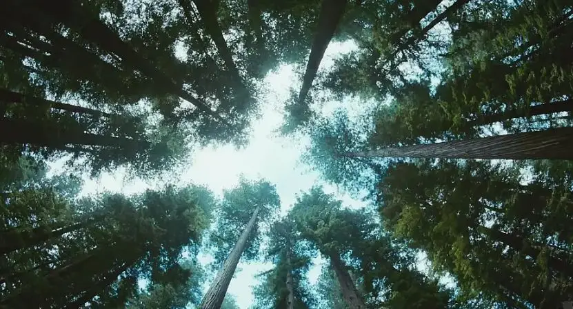
相关推荐：
100双绝望的眼睛
像猪一样活着，像猪一样死去 !
唱的不合拍，那你就闭嘴！
奥斯卡影帝，你把自己演死了
73年过去了，纳粹离我们有多远？
这里没有挑逗你眼目情欲的小鲜肉
也没有挑动你肉体情欲的段子
更没有膨胀你今生骄傲的鸡血
我们只在乎那些最质朴真诚的作品
在那里我们才能恢复真正的想象力
我们也坚信这才是我们真正需要的

ID:Six_hundred_hits
长按二维码，一键关注
【六百击】
-END-
电影评论
尽情分享朋友圈

苹果打赏
通道
小提示：文末广告是腾讯配送广告，内容与本号无关，但您的每次点击（无需反复点）都会给平台带来几毛收益，欢迎您点击支持六百击。